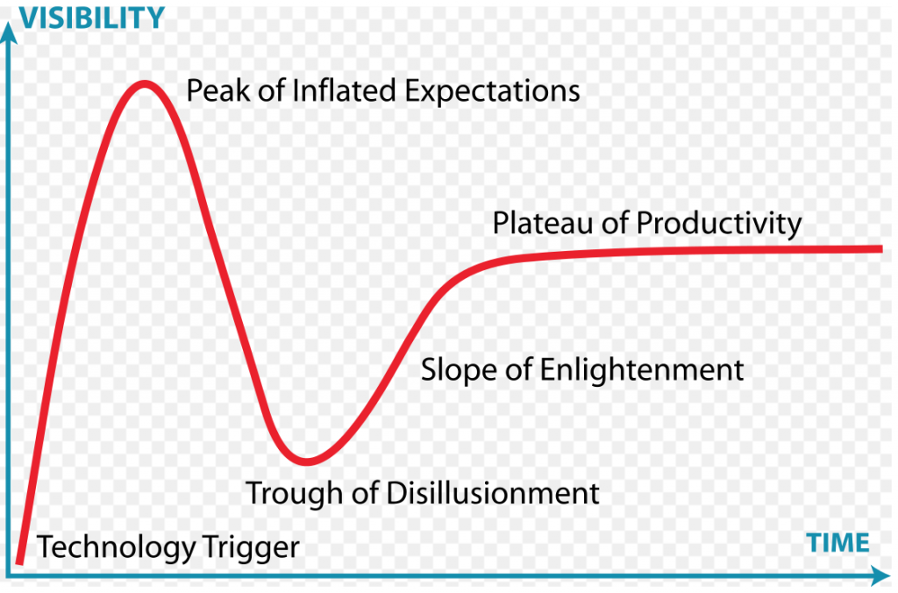
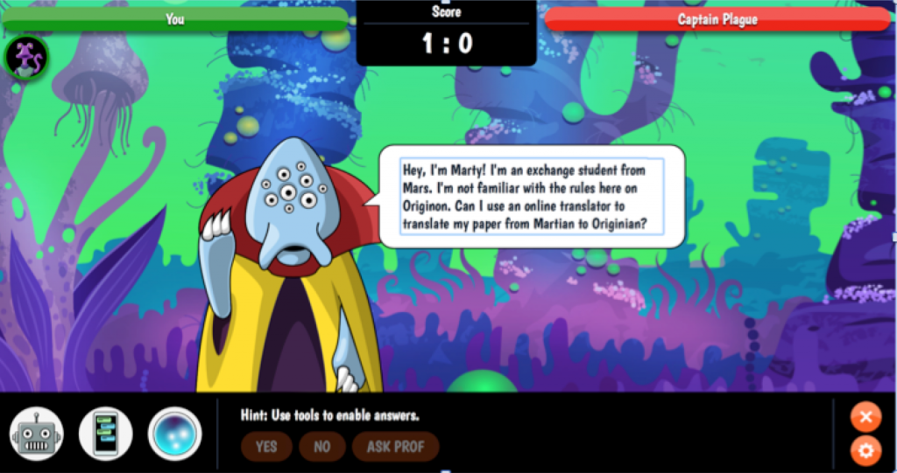
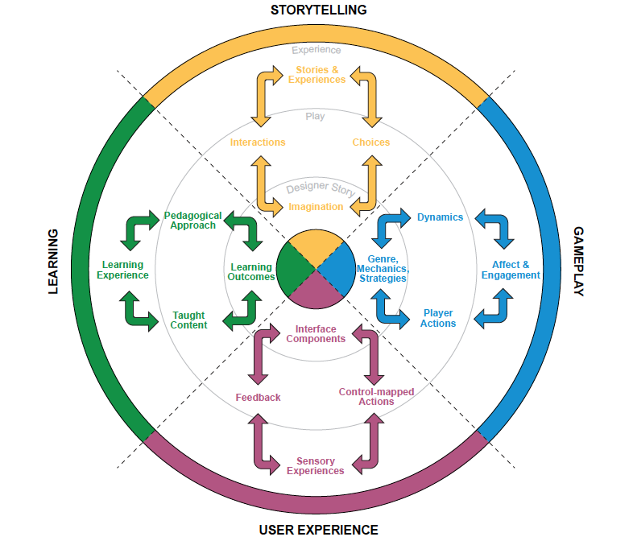

8.7.a Tecnologias emergentes: jogos sérios e gamificação



8.7a.1 O desafio das tecnologias emergentes
Não é incomum que um diretor de escola, um vice-reitor de faculdade ou o reitor de uma universidade regresse de uma conferência entusiasmado com o potencial da mais recente tecnologia para o ensino e a aprendizagem. São vítimas do que a consultora Gartner designa como o ciclo de hype (hype cycle).
Uma nova tecnologia gera entusiasmo, a comunicação social aborda o tema, a tecnologia atinge um pico de expectativas inflacionadas, começa a ser aplicada de forma mais ampla, surge a desilusão perante as realidades da implementação, e depois a tecnologia começa a encontrar o seu nicho à medida que se desenvolve uma melhor compreensão dos seus pontos fortes e limitações, atingindo finalmente um patamar de produtividade, onde funciona de forma satisfatória dentro dos seus limites. Os MOOCs constituem um excelente exemplo disso, situando-se para a maioria dos observadores informados em 2019 na fase final da encosta do esclarecimento (slope of enlightenment) ou emergindo já no patamar da produtividade (ver, por exemplo, Web Courseworks, 2018).
Novas tecnologias com aplicações educacionais surgem constantemente. Por exemplo, na primeira edição deste livro (escrita em 2015), não existia uma discussão aprofundada sobre inteligência artificial, realidade virtual ou jogos sérios, mas, quatro anos mais tarde, estes temas encontram-se no centro de muitos debates sobre o futuro da aprendizagem digital, razão pela qual se adicionou esta seção. Existem várias outras tecnologias que poderiam ser incluídas, mas muitas delas serão enquadradas no âmbito da inteligência artificial.
Não terei a possibilidade de analisar detalhadamente nenhuma destas três tecnologias (cada uma mereceria uma obra própria), mas estas revelam-se suficientemente importantes para justificar a sua apresentação. Focar-me-ei, mais uma vez, nas suas potenciais affordances, embora se deva reconhecer que, com qualquer tecnologia emergente, pode ser necessário tempo para identificar todas as suas vantagens e limitações.
8.7a.2 Jogos sérios
O ciclo de hype da Gartner é mais bem compreendido como uma forma de pensar sobre tecnologias emergentes do que como uma representação factual do seu desenvolvimento. Por exemplo, os jogos sérios constituem um caso de evolução mais lenta. Nunca se geraram expectativas excessivamente inflacionadas quanto ao seu impacto provável na educação; de fato, durante muito tempo foram descartados por serem considerados demasiado dispendiosos ou inadequados para um ensino sério. No entanto, essa perspectiva tem vindo a alterar-se nos últimos anos.
8.7a.2.1 O que são jogos sérios?
Existem diversas definições de jogos sérios. Incluí duas definições que abrangem tanto os contextos educativos como os empresariais.
O Financial Times Lexicon apresenta a seguinte definição:
Jogos sérios (serious games) são jogos concebidos para um fim que vai além do puro entretenimento. Utilizam os mecanismos de motivação do design de jogos — tais como a competição, a curiosidade, a colaboração, o desafio individual — e as mídias dos jogos, incluindo jogos de tabuleiro através de representação física ou videojogos através de avatares e imersão 3D, para aumentar a motivação dos participantes para se envolverem em tarefas complexas ou repetitivas. Os jogos sérios são, por conseguinte, utilizados numa variedade de situações profissionais, tais como na educação, na formação, na avaliação, no recrutamento, na gestão do conhecimento, na inovação e na investigação científica.
Zhonggen (2019) apresenta esta definição na sua revisão abrangente da investigação sobre jogos sérios:
Jogos sérios (serious games) referem-se a ferramentas de entretenimento com fins educativos, nas quais os jogadores desenvolvem os seus conhecimentos e praticam as suas competências superando inúmeros obstáculos durante o jogo.
Importa distinguir entre jogos sérios, aprendizagem baseada em jogos (game-based learning) e gamificação, dadas as diferenças nos seus objetivos, abordagens e impacto na aprendizagem.
- Aprendizagem baseada em jogos refere-se a “abordagem pedagógica de utilização de jogos na educação” (Anastasiadis, Lampropoulos e Siakas, 2018).
- Gamificação define-se como a “utilização de elementos de design de jogos em contextos não lúdicos” (Deterding et al., 2011).
Note-se que os jogos sérios não são necessariamente digitais. No entanto, sejam digitais ou não, são regidos por princípios de design semelhantes, tais como a mecânica, a dinâmica e a estética (Hunicke et al., 2004).
8.7a.2.2 Porquê utilizar jogos sérios?
As principais razões apresentadas para a utilização de jogos na educação são:
- melhorar a motivação dos estudantes para aprender;
- envolver os aprendizes de forma mais profunda no processo de aprendizagem;
- melhorar os resultados de aprendizagem;
- melhorar a assiduidade e a participação.
No entanto, uma revisão extensa da literatura realizada por Dichev e Dicheva em 2017 revelou que a investigação permanece inconclusiva sobre estes pressupostos. Constataram também que:
- a prática de gamificar a aprendizagem ultrapassou a compreensão dos investigadores sobre os seus mecanismos e métodos;
- não existem evidências científicas suficientes de elevada qualidade que sustentem os benefícios a longo prazo dos jogos sérios num contexto educativo;
- subsiste uma compreensão limitada de que a forma de gamificar uma atividade depende das especificidades do contexto educativo.
Dichev e Dicheva concluem, contudo, que o seu estudo não significa que a gamificação não possa ser utilizada com sucesso num contexto de aprendizagem; pelo contrário, são necessários melhores desenhos pedagógicos e mais investigação.
Outras pesquisas tendem a mostrar-se mais positivas. Hamari et al. (2016) e Clark et al. (2016) encontraram evidências suficientes de que, quando bem planejados e sob as condições adequadas, os jogos sérios melhoraram significativamente a aprendizagem dos estudantes em comparação com condições não lúdicas.
Zhonggen (2019) verificou que, entre a "vasta quantidade de conclusões sobre a aprendizagem apoiada por jogos sérios, a maioria... revela-se favorável, a par de alguns resultados negativos". No entanto, os principais benefícios tenderam a situar-se no domínio afetivo (satisfação dos estudantes e melhoria da aprendizagem social e da comunicação) do que em resultados imediatos de aprendizagem cognitiva, exceto na ciência (melhoria da retenção e compreensão holística), arquitetura e medicina/saúde. Nestas últimas áreas, os jogos ajudaram crianças com autismo a aprender. Zhonggen relata:
"Genericamente, ... a ciência médica tem vindo a registar recentemente muito mais estudos sobre a aprendizagem apoiada por jogos sérios em comparação com outras áreas, e a maioria dos estudos em ciências médicas apoia a utilização de jogos sérios".
8.7a.2.3 Exemplos de jogos sérios
A equipe de Estratégias de Educação Digital (DES) da Universidade de Ryerson participou no desenvolvimento de várias simulações de jogos virtuais, incluindo:
Aprendizagem baseada em jogos: O gabinete de Integridade Académica da Universidade de Ryerson, em colaboração com a DES, desenvolveu um jogo de aprendizagem digital chamado Academic Integrity in Space para motivar os estudantes a completarem formações de autoestudo e a aprenderem sobre a integridade académica, valores e comportamentos esperados dos alunos. Os objetivos da equipe de desenvolvimento do jogo consistiram em criar um jogo digital bem delineado para cumprir os objetivos de aprendizagem de tomada de decisões, aprendizagem prática (learning by doing) e vivência de situações em primeira mão, através de dramatizações.



Simulação de videojogo: O jogo Home Visit promove a aplicação de conhecimentos e competências associados ao estabelecimento de uma relação terapêutica enfermeiro-cliente e à realização de uma avaliação de saúde mental. Os estudantes assumem o papel de um enfermeiro de saúde comunitária encarregue de realizar uma visita domiciliária. O vídeo é utilizado para criar uma experiência autêntica, e os estudantes têm de responder a situações particularmente desafiantes, com base em procedimentos ensinados noutras partes da disciplina. Consoante a resposta do aluno, utilizam-se outros segmentos de vídeo para fornecer feedback e prosseguir com cenários que testam o procedimento adequado seguinte. Professores do Centennial College, da Universidade de Ryerson e do George Brown College estão a desenvolver uma série de simulações de videojogos em acesso aberto através de um portal de experiências de cuidados de saúde virtuais.


Gamificação: Kyle Geske, professor no Red River College, em Winnipeg, desenvolveu uma abordagem baseada em jogos para o ensino de web design. Na sua disciplina eletiva sobre Desenvolvimento Full Stack de sites, os estudantes têm de conceber um projeto de acordo com os princípios fornecidos pelo docente. Em cada fase do processo de concepção no âmbito do projeto, os estudantes ganham pontos e competem ao longo da disciplina com outros alunos, que podem ver as classificações de todos os colegas em cada etapa. O estudante pode melhorar a sua nota (level up) voltando atrás e melhorando cada uma das etapas do design. Esta abordagem resultou num aumento da classificação média final da disciplina em comparação com os métodos tradicionais de sala de aula. Note-se que esta disciplina envolve elementos lúdicos, como a competição e a evolução de nível (levelling up), sem recorrer à utilização de jogos propriamente ditos.
8.7a.2.4 Conceber jogos sérios
A revisão da literatura efetuada por Zhonggen (2018) destacou a importância dos seguintes aspectos no design de jogos eficazes:
- história de fundo e produção;
- realismo;
- inteligência artificial e adaptabilidade;
- interação;
- feedback e debriefing;
- facilidade de utilização;
- surpresas.
Em resultado destas investigações prévias, e sob a liderança de Naza Djafarova, a equipe de Estratégias de Educação Digital (DES) da G. Raymond Chang School for Continuing Education na Universidade de Ryerson, em Toronto, desenvolveu um guia prático de design (2018) para a aprendizagem baseada em jogos sérios, fundamentado num processo de investigação sobre jogos. Este guia constitui um recurso educacional aberto e foi concebido para responder a três objetivos:
- fornecer um referencial conceitual para orientar o design de jogos no âmbito de equipes multidisciplinares no ensino superior;
- oferecer um guia metodológico para a realização de um workshop participativo focado na fase de pré-produção do processo de desenvolvimento de jogos;
- partilhar recursos, disponibilizando o guia e o planejamento do workshop como recursos educacionais abertos.
A metodologia de design de jogos consiste numa adaptação do modelo Design, Play, and Experience (DPE), desenvolvido por Winn (2009). O processo de desenvolvimento de jogos integra três fases:
- a fase de pré-produção, durante a qual ocorre o brainstorming entre os membros da equipe, conduzindo à concepção de um protótipo em papel do jogo;
- a fase de produção, momento em que o jogo é desenvolvido; e
- a fase de pós-produção, durante a qual o jogo é testado e refinado antes de ser disponibilizado aos aprendizes.
A equipe de Estratégias de Educação Digital utilizou o modelo Design, Play and Experience para identificar quatro elementos essenciais dos jogos educativos:
- Aprendizagem (Learning) refere-se aos conteúdos a aprender pelos jogadores através do jogo, com resultados de aprendizagem específicos e mensuráveis;
- Narrativa (Storytelling) refere-se à história de fundo do jogo e inclui uma descrição dos personagens, do ambiente e do objetivo final do jogo;
- Jogabilidade (Gameplay) refere-se à forma como o jogador interage com o jogo ou com outros jogadores (no caso de um jogo multijogador). Traduz o tipo de atividade (por exemplo, quebra-cabeças, perguntas e respostas, etc.) presente no jogo;
- Experiência do Utilizador (User Experience) refere-se às emoções e atitudes do jogador enquanto joga, bem como à forma como interage com o jogo.
A Figura 8.7a.4 apresenta uma representação mais detalhada das várias componentes da metodologia de design de jogos sérios da Ryerson.



O relatório da Digital Education Strategies sugere uma abordagem de workshop para o design de jogos sérios, na qual participam todos os principais envolvidos (especialistas de conteúdos, designers instrucionais, produtores de mídias, entre outros). O brainstorming nas fases iniciais do planejamento é considerado essencial. O design integra também testes e recolha de feedback dos usuários antes do lançamento do jogo.
Existirão provavelmente outras abordagens de design eficazes, mas o modelo acima descrito destaca a abordagem multidisciplinar essencial no planejamento de jogos sérios.
8.7a.2.5 Características educacionais únicas dos jogos sérios
Estas características necessitam ainda de ser claramente identificadas e validadas, mas apontam-se duas linhas de argumentos distintas a favor dos jogos sérios:
- a primeira sustenta que estes conseguem aumentar a motivação e o empenho dos estudantes;
- a segunda defende que os jogos podem revelar-se particularmente úteis para desenvolver as seguintes competências:
- resolução de problemas;
- competências de comunicação;
- tomada de decisões;
em contextos específicos que se aproximam do mundo real.
8.7a.2.6 Pontos fortes e limitações
Em termos de ciclo de hype, os jogos sérios encontram-se algures ao longo da encosta do esclarecimento (slope of enlightenment). Não existe ainda investigação suficiente para os posicionar no patamar da produtividade, mas verifica-se evidência prática de que estão a ganhar relevância na educação.
No entanto, existem várias razões pelas quais os jogos sérios não se tornaram mais prevalentes na educação. A primeira é de ordem filosófica. Verifica-se resistência à ideia de jogos porque alguns consideram a expressão "jogos sérios" como um oximoro. Como pode um jogo ser sério? Muitos professores temem que a aprendizagem possa ser facilmente banalizada através de jogos ou que os jogos consigam abranger apenas uma parte muito limitada do que deve constituir a aprendizagem — o processo não pode limitar-se à diversão; não é esse o objetivo da educação. Do mesmo modo, muitos designers de jogos profissionais não demonstram interesse no desenvolvimento de jogos sérios porque temem que, se o objetivo principal for a aprendizagem e não o divertimento, o foco na educação corra o risco de eliminar o elemento central de um jogo: ser divertido de jogar.
Uma razão mais pragmática prende-se com o custo e a qualidade. O pressuposto custo elevado dos videojogos tem funcionado até à data como um fator de dissuasão na educação. Não existe um modelo de negócio evidente que justifique o investimento. A título de exemplo, a produção dos videojogos de entretenimento mais vendidos custa milhões de dólares, numa escala semelhante à dos principais filmes de cinema. Se os jogos forem produzidos de forma barata, não sofrerá a qualidade — em termos de padrões de produção, narrativa/enredo, recursos visuais e empenho do aprendiz —, tornando-os pouco atraentes para os alunos?
No entanto, a principal razão pela qual os jogos sérios não se encontram mais disseminados na educação reside no fato de a maioria dos educadores simplesmente não saber o suficiente sobre o assunto: o que existe, de que forma podem ser utilizados ou como desenhá-los. A experiência sugere que existem muitas aplicações possíveis e realistas para os jogos sérios na educação. Verifica-se alguma evidência (ver, por exemplo, Arnab, 2014) de que é possível desenvolver jogos sérios eficazes a custos reduzidos.
No entanto, verifica-se sempre um elevado grau de risco no design de jogos sérios. Não existe uma forma segura de prever antecipadamente o sucesso de um novo jogo. Alguns jogos simples e de baixo custo podem funcionar bem; outros de produção dispendiosa podem facilmente revelar-se um fracasso. Isto implica a realização de testes cuidadosos e a recolha de feedback durante o desenvolvimento. Assim, os jogos sérios deveriam ser considerados de forma mais sistemática para o ensino na era digital — mas a sua aplicação necessita de ser realizada de forma cuidadosa e profissional.
Assim, os jogos sérios constituem uma atividade de risco e de retorno potencialmente elevados para o ensino na era digital. O sucesso nos jogos sérios exige a construção sobre as melhores práticas de design de jogos, tanto dentro como fora da educação, a partilha de custos e de experiências, e a colaboração entre instituições e equipes de desenvolvimento de jogos. Contudo, à medida que o ensino na era digital se orienta cada vez mais para o desenvolvimento de competências de nível superior, a aprendizagem experiencial e a resolução de problemas em contextos do mundo real, os jogos sérios desempenharão inevitavelmente um papel cada vez mais relevante.
Referências
Anastasiadis, T. et al. (2018) Digital Game-based Learning and Serious Games in Education International Journal of Advances in Scientific Research and Engineering, Vol. 4, No. 12
Arnab, S. et al. (2014) Mapping learning and game mechanics for serious games analysis. British Journal of Educational Technology, Vol. 46, No. 2, pp. 391–411
Deterding, S. et al. (2011) Gamification: Using Game Design Elements in Non-Gaming Contexts in PART 2-Proceedings of the 2011 annual conference extended abstracts on Human Factors in Computing Systems Vancouver BC: CHI
Dichev, C. and Dicheva, D. (2017) Gamifying education: what is known, what is believed and what remains uncertain: a critical review International Journal of Educational Technology in Higher Education, Vol. 14, No. 9
Djafarova, N. et al. (2018) The Art of Serious Game Design Toronto ON: Chang School of Continuing Studies, Ryerson University
Hunicke, R., LeBlanc, M., & Zubek, R. (2004). MDA: A formal approach to game design and game research, in Proceedings of the Challenges in Game AI Workshop, San Jose CA: Nineteenth National Conference on Artificial Intelligence
Winn, B. (2009) ‘The design, play and experience framework’, in R. Ferdig (Ed.), Handbook of research on effective electronic gaming in education. Hershey, PA: IGI Global (pp. 388–401).
Zhonggen, Y. (2019) A Meta-Analysis of Use of Serious Games in Education over a Decade, International Journal of Computer Games Technology, vol. 2019, Article ID 4797032
Atividade 8.7a Utilizando e desenhando jogos sérios
- Qual a sua opinião sobre os jogos sérios e a gamificação? Considera que constituem abordagens úteis para o ensino na era digital ou tratam-se apenas de um recurso acessório que evita os verdadeiros desafios da aprendizagem, sobretudo ao nível do ensino superior?
- Analise o documento "Art of Serious Games Design" da Universidade de Ryerson. Considera que este modelo poderia ser aplicado na sua instituição? Quem lideraria esse esforço? Com quais objetivos ou resultados de aprendizagem este processo poderia ajudar no seu programa de estudos? Qual seria o principal obstáculo para a sua implementação?
- Quais outras abordagens poderiam ser adotadas para introduzir a utilização de jogos sérios no seu ensino?
Clique no podcast abaixo para feedback sobre esta atividade:
Um elemento de áudio foi excluído desta versão do texto. Você pode ouvi-lo on-line aqui: https://pressbooks.bccampus.ca/teachinginadigitalagev2/?p=1313